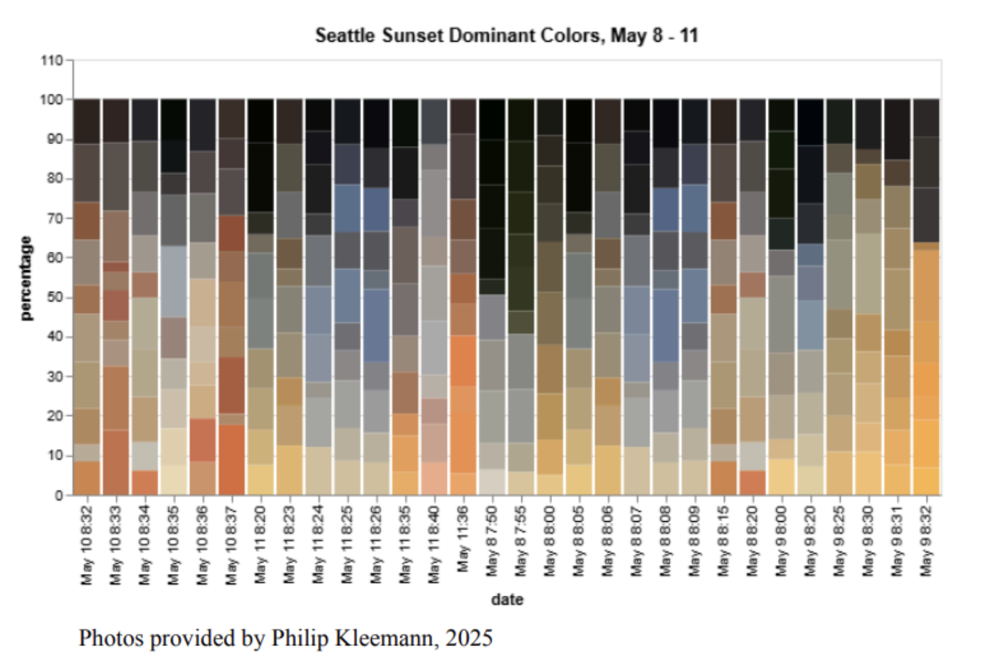
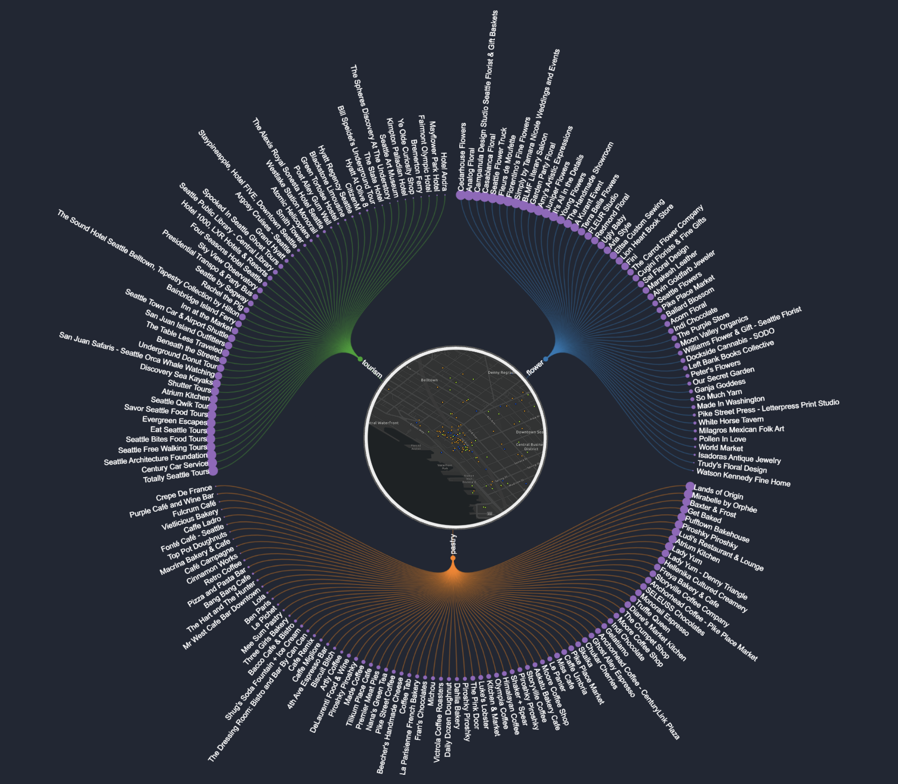
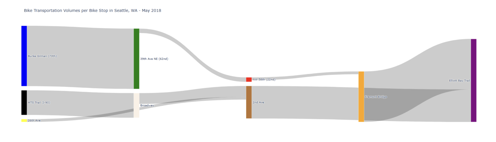

Pallet- This infographic displays the color pallet of thirty different images taken of the sunset from Golden Gardens, Seattle. The y-axis represents the percentage of color and the x-axis represents the date the image was taken. As you can see Seattle isn’t just a gray and rainy city, it is full of different beautiful colors seen in the pallet to the right.

Dendrogram - This infographic gathers data from yelp to display the places of interest in Pike Place. The central nodes are the categories in which this infographic focuses on, each having there own unique colore. The outer nodes represent the specific places within each category. They are ranked based on 1-5 star reviews on yelp, the larger purple circles are equal to higher reviews and the smaller purple circles are equal to lower rated reviews

Sankey - This infographic displays bike transportation volumes per bike trails/bike stop in Seattle. The different color bars correspond to the different bike trails/bike stops. The thickness of the lines connecting the bike trails/stops together is tied to the magnitude of flow, using the absolute value of bike counts.